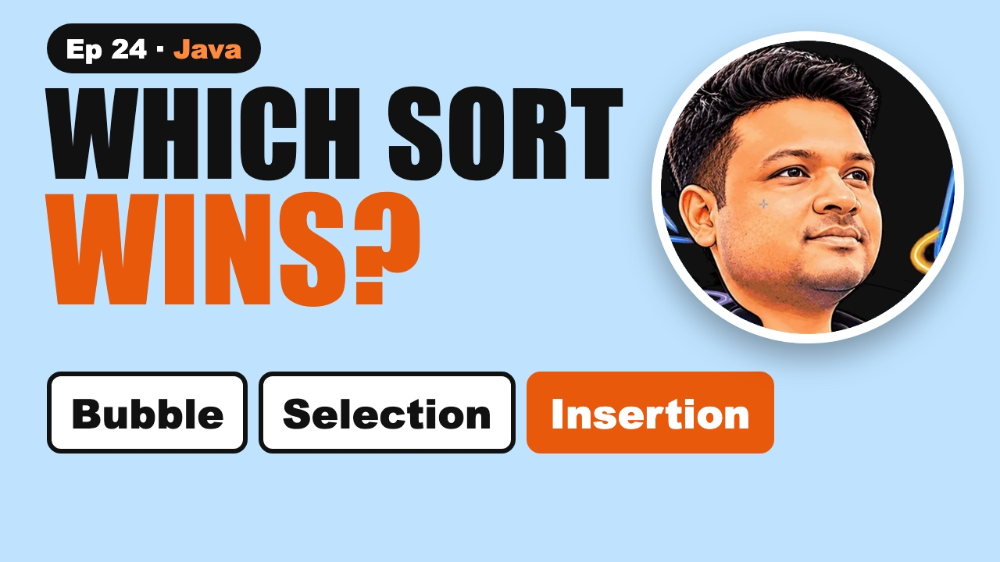

Bubble, Selection and Insertion Sort in Java | Every Swap

The video goes live on 1 Dec 2026 at 6:00 PM IST. The notes are ready now.
?What this episode covers
Bubble, selection and insertion sort are all O(n²) in the worst case, but they behave very differently. We sort 5, 1, 4, 2, 8 all three ways and watch every move.
Bubble sort swaps neighbours, so the biggest value bubbles to the end each pass. Stop when a pass makes no swaps, and a sorted array takes one pass. Selection sort moves the smallest remaining value to the front. It makes the fewest swaps but always scans everything, and its long swaps make it unstable. Insertion sort slides each value left into place, like sorting playing cards.
On small or nearly sorted data insertion sort is usually the fastest of the three, close to O(n), which is why Java's own sort switches to it for very small pieces.
◎What you'll be able to do
- Bubble sort
- Selection sort
- Insertion sort in Java
- The comparison
- What libraries use
{ }The Java code from the video
Type it out yourself, or copy it. Each file runs on its own with java FileName.java and prints the examples from the video.
import java.util.*;
// Episode 24: bubble, selection and insertion sort, printing every pass. Run: java BasicSorts.java
public class BasicSorts {
// swap neighbours; stop early if a pass makes no swaps (O(n) on sorted input)
static void bubbleSort(int[] a) {
for (int pass = 0; pass < a.length - 1; pass++) {
boolean swapped = false;
for (int j = 0; j < a.length - 1 - pass; j++) {
if (a[j] > a[j + 1]) { int t = a[j]; a[j] = a[j + 1]; a[j + 1] = t; swapped = true; }
}
System.out.println(" bubble pass " + (pass + 1) + ": " + Arrays.toString(a));
if (!swapped) break;
}
}
// move the smallest remaining number to the front; at most n - 1 swaps, always O(n²) compares
static void selectionSort(int[] a) {
for (int i = 0; i < a.length - 1; i++) {
int min = i;
for (int j = i + 1; j < a.length; j++) if (a[j] < a[min]) min = j;
int t = a[i]; a[i] = a[min]; a[min] = t;
System.out.println(" selection step " + (i + 1) + ": " + Arrays.toString(a));
}
}
// slide each number left into place, like sorting playing cards
static int insertionSort(int[] a) {
int comparisons = 0;
for (int i = 1; i < a.length; i++) {
int key = a[i];
int j = i - 1;
while (j >= 0) {
comparisons++;
if (a[j] <= key) break;
a[j + 1] = a[j];
j--;
}
a[j + 1] = key;
}
return comparisons;
}
public static void main(String[] args) {
System.out.println("bubbleSort([5, 1, 4, 2, 8]):");
bubbleSort(new int[]{5, 1, 4, 2, 8});
System.out.println("selectionSort([5, 1, 4, 2, 8]):");
selectionSort(new int[]{5, 1, 4, 2, 8});
int[] c = {5, 1, 4, 2, 8};
insertionSort(c);
System.out.println("insertionSort([5, 1, 4, 2, 8]) → " + Arrays.toString(c));
int[] sorted = {1, 2, 3, 4, 5, 6, 7, 8, 9, 10};
System.out.println("insertionSort on 10 sorted numbers: " + insertionSort(sorted) + " comparisons (your turn)");
}
}!The mistake to watch for
Forgetting the no-swap check in bubble sort, so a sorted array still takes O(n²).
✦Key moments tap one to jump there
↗Full transcript
Read the whole lesson
You learn three sorts, but pick the wrong one for nearly sorted data. Most people do. Here's which one wins.
Bubble sort, selection sort and insertion sort. Interviewers still ask all three, and they ask what's different.
We'll sort the same five numbers all three ways, five, one, four, two and eight, and watch every move.
Welcome back to Compiled Canvas. This is Episode Twenty Four of our DSA series. Last time, we binary searched the answer.
Here's the plan. First, bubble sort. Then selection sort. Then insertion sort, in Java. Then the comparison table. And which one real libraries still use. A cheat sheet. And an easy quiz at the end.
Let's go.
First, bubble sort. The one everyone learns first, and the one with a hidden speed-up most people miss.
Compare each pair of neighbours, and swap them if they're in the wrong order. Five and one. Swap.
Five and four. Swap. Five and two. Swap. Five and eight. Fine. After one pass, the biggest number has bubbled to the end.
Second pass. Four and two swap. Now it's one, two, four, five, eight. Sorted.
Here's the speed-up. If a whole pass makes no swaps, stop. On an already sorted array, that's one pass, O of n.
Selection sort makes the fewest swaps of the three. But it can never finish early. Here's why.
Find the smallest number, and swap it to the front. The smallest is one. Swap it with five.
Now find the smallest of the rest. That's two. Swap it with five.
Four, five and eight are already in place. Sorted, with just two swaps.
But to find each smallest, it scans everything that's left, every time. Even on a sorted array. So it's always O of n squared.
If you've ever sorted playing cards in your hand, you already know insertion sort.
Take one, and slide it left past every bigger number. One goes before five.
Four slides before five. Two slides before four and five.
Eight is already bigger than everything, so it stays. Sorted.
And on nearly sorted data, each card only slides a step or two. That's why insertion sort wins there, close to O of n.
Here it is in Java. Start at the second number, and call it the key.
While the number on the left is bigger, shift it one place right.
Then drop the key into the gap. Eleven lines, sorted in place, no extra array.
Quick pause, before we go further. If you're finding this video valuable, hit subscribe to Compiled Canvas, and turn on the bell. It's free, it takes one second, and it helps me keep making this complete DSA series for you. Alright, back to it.
So which one should you use? Here's the table interviewers want you to know.
All three are O of n squared in the worst case. A thousand numbers, about a million steps.
Best case is different. Bubble with the stop check, and insertion, finish a sorted array in O of n. Selection never does.
Bubble and insertion are stable. Equal values keep their order. Selection's long swaps can break that.
And for small or nearly sorted arrays, insertion sort is usually the fastest of the three. Java's own sort switches to insertion sort for very small pieces.
Your turn. Pause. Ten numbers, already sorted. How many comparisons does insertion sort make?
Nine. Each number is compared once with its left neighbour, and nothing moves.
So, here's the whole thing in one cheat sheet. Pause and screenshot this.
Bubble sort swaps neighbours.
Stop bubble sort when a pass has no swaps.
Selection sort moves the smallest to the front.
Insertion sort slides each item into place.
All three are O of n squared at worst.
Insertion wins on small or nearly sorted data.
Okay, quiz time. Three easy questions. Pause the video, think, and then hit play.
Question one. Which sort makes the fewest swaps?
Question two. Which one is O of n on an already sorted array?
Question three. Which of the three is not stable?
Ready?
Question one: Selection sort.
Question two: Insertion sort, and bubble with the stop check.
Question three: Selection sort.
How many did you get right? Tell me in the comments: three out of three, two, or one.
Let's recap. Bubble sort swaps neighbours. Selection sort picks the smallest. Insertion sort slides cards into place. All are O of n squared at worst. Insertion wins on nearly sorted data.
Your homework. Code all three sorts and test them on five, one, four, two, eight. Then solve LeetCode nine twelve, Sort an Array, and see which one times out. Java answers are on compiled canvas dot com. And tell me in the comments: which sort did your teacher teach first?
Next episode, merge sort. Divide and conquer, and the first sort that's truly fast.
And don't forget to subscribe to Compiled Canvas, so you don't miss anything new in tech and the job market. Keep coding, stay consistent, and I'll see you in the next one.